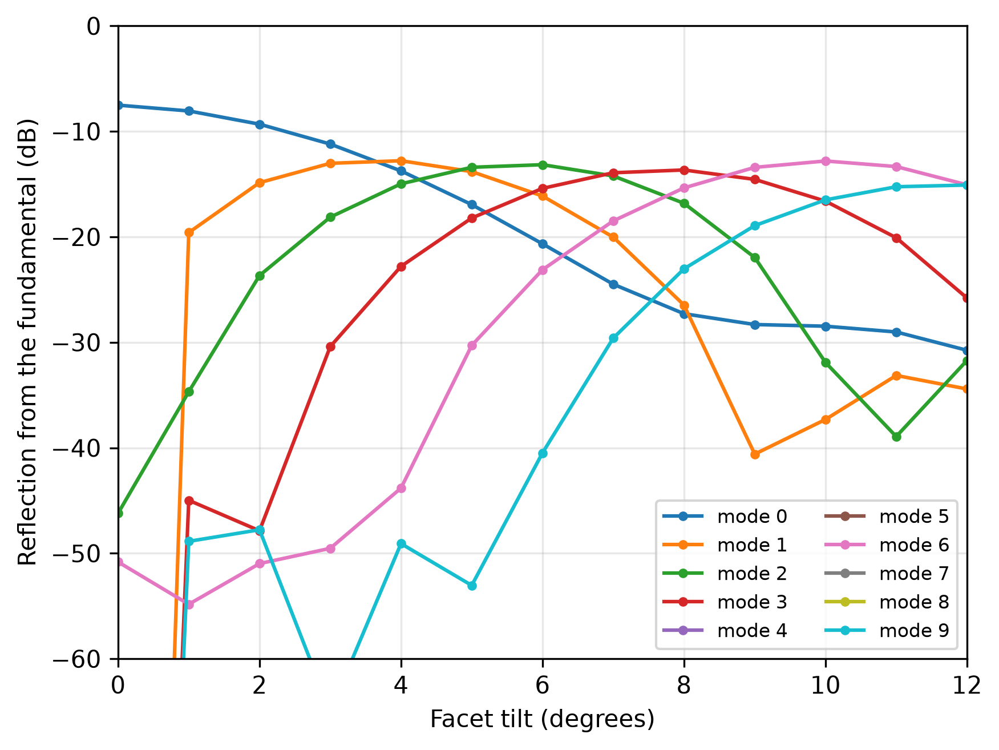
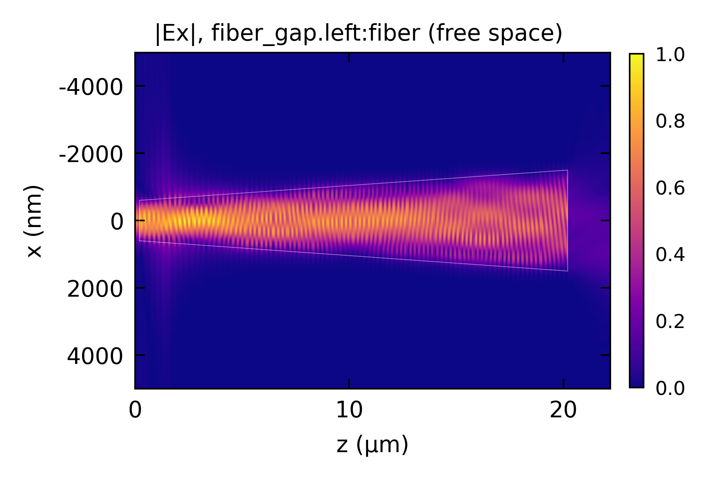

EME: Angled Facet
Coupling a lensed-fiber Gaussian beam through a tapered, angled-facet output, and how much an angled facet suppresses back-reflection.
This code example is licensed under the BSD 3-Clause License.
import sys
import numpy as np
import emodeconnection as emc
from emodeconnection import make_angled_facet_port
from matplotlib import pyplot as plt
## Set simulation parameters
wavelength = 780 # [nm] wavelength
dx, dy = 20, 20 # [nm] resolution
h_core = 300 # [nm] waveguide core height (SiN)
clad = 1000 # [nm] waveguide cladding (SiO2)
w_narrow = 1200 # [nm] narrow (input) waveguide width
w_wide = 3000 # [nm] wide (facet) waveguide width
window_width = w_wide + clad * 2 # [nm]
window_height = h_core + clad * 2 # [nm]
core_center = (0, window_height / 2) # [nm]
num_modes = 10 # [-]
BC = '00'
## Part 1: Tilting the facet throws the reflection
## into higher order modes, so the fundamental mode
## reflection falls sharply with angle.
em = emc.EMode(emode_cmd=sys.argv[1:], simulation_name='facet_sweep')
em.settings(
wavelength=wavelength, x_resolution=dx, y_resolution=dy,
window_width=window_width, window_height=window_height,
num_modes=num_modes, boundary_condition=BC,
background_material='SiO2')
em.shape(name='BOX', material='SiO2', height=clad)
em.shape(name='core', material='Ta2O5', height=h_core, etch_depth=h_core, mask=w_wide)
em.label_profile(name='wide')
## The facet re-references the waveguide's right-hand port to a tilted plane.
## Renaming it from 'right' to 'out' must be carried into connect_ports.
em.straight_section(
name='wg', profile='wide', length=2e3,
ports=[make_angled_facet_port('out', 'right', pivot_angle=0)])
em.pwd_section(
name='gap', length=1e3, material='Air',
window=(window_width * 2, window_height * 2),
offset=core_center, num_modes=1024)
em.connect_ports(pairs=[('wg.out', 'gap.left')])
## Sweep the facet tilt and keep the S-matrix at each angle.
tilts = np.arange(0, 12.1, 1) # [deg]
data = em.sweep(key='section, wg, facet_angle', values=tilts, result='S_matrix')
## Reflection from the fundamental into every guided mode: the tilt steers power
## into the higher-order modes. R + T is printed as a check that the modal basis is large enough.
reflection = np.array([np.abs(s.reflection(0))[:num_modes, 0] ** 2
for s in data['S_matrix']])
for tilt, s in zip(tilts, data['S_matrix']):
budget = (np.abs(s.reflection(0))[:, 0] ** 2).sum() + \
(np.abs(s.transmission(0, 1))[:, 0] ** 2).sum()
print(f'tilt {tilt:4.1f} deg: R + T = {budget * 100:5.1f} %')
for m in range(num_modes):
plt.plot(tilts, 10*np.log10(reflection[:, m]), marker='o', ms=3, label=f'mode {m}')
plt.xlabel('Facet tilt (degrees)')
plt.ylabel('Reflection from the fundamental (dB)')
# plt.yscale('log')
plt.ylim(top=0, bottom=-60)
plt.autoscale(enable=True, axis='x', tight=True)
plt.legend(fontsize=8, ncol=2)
plt.grid(True, which='both', alpha=0.3)
plt.savefig('facet_reflection_vs_tilt.png', dpi=300, bbox_inches='tight')
em.close()
## Part 2: a lensed fiber coupling in, through an adiabatic taper to an angled
## output facet. A free-space field launches a Gaussian beam at the input.
em2 = emc.EMode(emode_cmd=sys.argv[1:], simulation_name='facet_coupling')
em2.settings(
wavelength=wavelength, x_resolution=dx, y_resolution=dy,
window_width=window_width*2, window_height=window_height,
num_modes=num_modes, boundary_condition=BC,
background_material='SiO2')
em2.shape(name='BOX', material='SiO2', height=clad)
em2.shape(name='core', material='Ta2O5', height=h_core, etch_depth=h_core, mask=w_narrow)
em2.label_profile(name='narrow')
em2.shape(name='core', mask=w_wide)
em2.label_profile(name='wide')
em2.pwd_section(
name='fiber_gap', length=200, material='Air',
window=(window_width * 2, window_height * 2), offset=core_center, num_modes=1024)
em2.taper_section(
name='taper', profile='narrow', profile_end='wide', length=20e3,
ports=[make_angled_facet_port('out', 'right', pivot_angle=10)])
em2.pwd_section(
name='out_gap', length=2e3, material='Air',
window=(window_width * 2, window_height * 2),
offset=core_center, num_modes=1024)
em2.connect_ports(pairs=[('taper.out', 'out_gap.left')])
## gaussian_field takes the field 1/e radius, which is the intensity FWHM
## divided by sqrt(2 ln 2)
fwhm = 600 # [nm]
waist = fwhm / np.sqrt(2 * np.log(2))
em2.free_space_field(
name='fiber', port='fiber_gap.left',
# name='fiber', port='left',
waist=waist, center=core_center, wavelength=wavelength)
em2.EME()
## How much of the beam's power the input port's modes capture; the rest radiates
## away uncoupled and is not in the S-matrix.
report = em2.free_space_field_diagnostics(name='fiber')
print(report)
em2.plot(
excitation='fiber', component='Ex', plot_function='abs', plane='z-x',
normalization='component')
## Close EMode
em2.close()
Console output:
EMode3D 1.0.4 - email
Sweeping section parameter 'facet_angle'...
Solving EME: facet_angle = 0.0... completed in 9.3 sec
Solving EME: facet_angle = 1.0... completed in 6.9 sec
Solving EME: facet_angle = 2.0... completed in 6.9 sec
Solving EME: facet_angle = 3.0... completed in 6.9 sec
Solving EME: facet_angle = 4.0... completed in 6.9 sec
Solving EME: facet_angle = 5.0... completed in 7.0 sec
Solving EME: facet_angle = 6.0... completed in 6.9 sec
Solving EME: facet_angle = 7.0... completed in 6.9 sec
Solving EME: facet_angle = 8.0... completed in 6.9 sec
Solving EME: facet_angle = 9.0... completed in 6.9 sec
Solving EME: facet_angle = 10.0... completed in 6.9 sec
Solving EME: facet_angle = 11.0... completed in 7.0 sec
Solving EME: facet_angle = 12.0... completed in 6.9 sec
completed in 1 min 32.2 sec
Exited EMode
EMode3D 1.0.4 - email
Solving S-matrices...
Solving section: fiber_gap... completed in 0.0 sec
Solving section: taper... completed in 4 min 29.8 sec
Solving section: out_gap... completed in 0.0 sec
completed in 4 min 29.8 sec
Exited EMode
tilt 0.0 deg: R + T = 96.2 %
tilt 1.0 deg: R + T = 93.5 %
tilt 2.0 deg: R + T = 89.9 %
tilt 3.0 deg: R + T = 86.5 %
tilt 4.0 deg: R + T = 83.5 %
tilt 5.0 deg: R + T = 80.8 %
tilt 6.0 deg: R + T = 78.4 %
tilt 7.0 deg: R + T = 76.6 %
tilt 8.0 deg: R + T = 75.7 %
tilt 9.0 deg: R + T = 75.1 %
tilt 10.0 deg: R + T = 71.8 %
tilt 11.0 deg: R + T = 62.5 %
tilt 12.0 deg: R + T = 46.7 %
free-space field 'fiber' at port 'fiber_gap.left' (780 nm): 100.0% captured by a 1022-mode basis
Figures:

